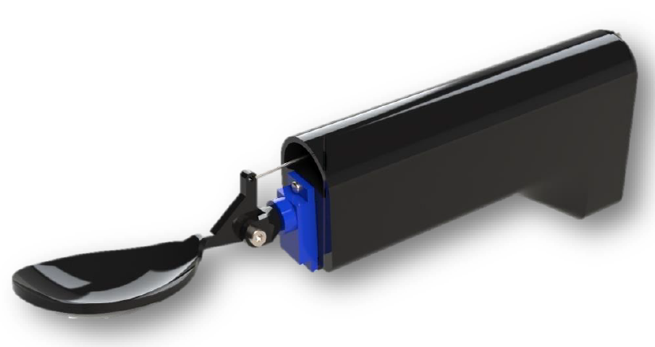
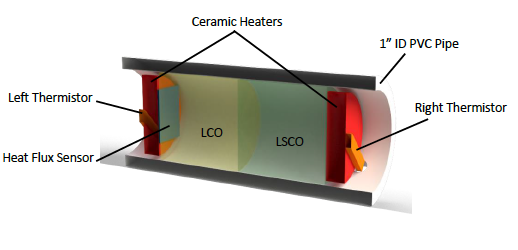
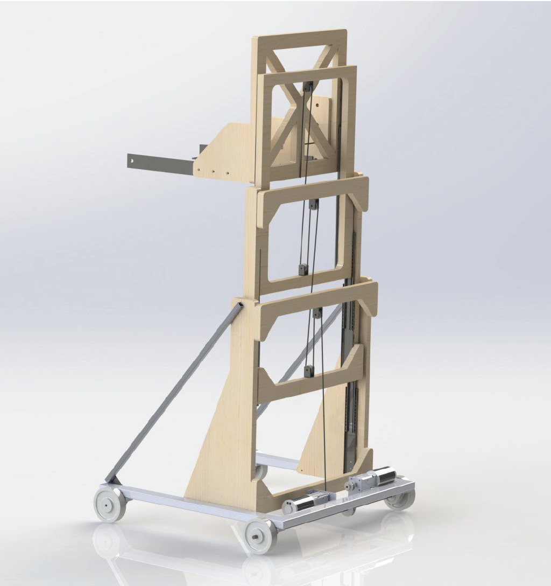
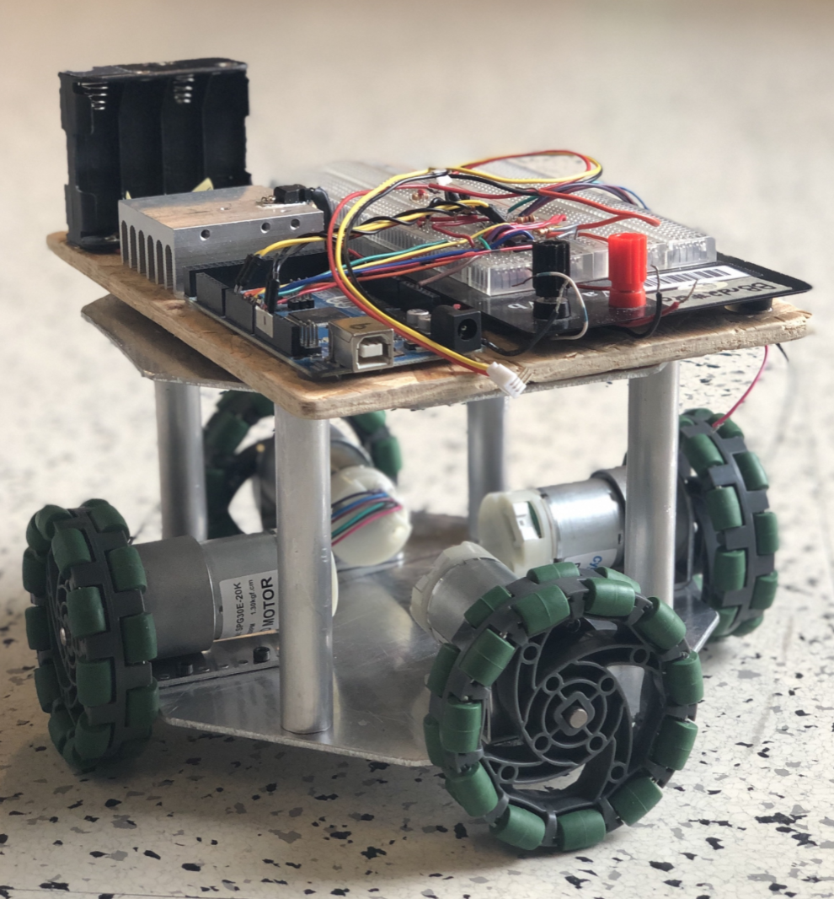

Hand Tremor Spoon Stabilizer

In order to cope with the symptoms Parkinson's patients struggle with on a daily basis, a mechatronics solution was 3D printed that utilizes components including an IMU sensor, servo motor, and a microcontroller to swiftly stabilize a spoon. A complementary filter is used to combine the accelerometer and gyroscope readings from the IMU sensor to understand the angular position, orientation and velocity of the spoon. The solution stabilizes the spoon in the pitch and roll axis actuated by the servo motor through a push-pull linkage.
Development of a Thermal Diode

Analogous to how electric diodes have revolutionized electronics with the ability to control the direction of current, an effective thermal diode would be able to restrict and favour the direction of heat flow. For the final design project of undergrad, our group performed and extensive literature review on current technology and simulated the heat transfer in specific materials and geometries calculating the difference of heat flow transfer in the forward and reverse directions. The larger a heat transfer is in the forward direction relative to the reverse translates to a more effective diode. Conducting simulation, environmental, manufacturing, and economic analysis, two phase-change materials and geometry of the device were proposed for an a effective diode.

Inspired by Amazon's automated shipping and handling system, the design created is an automated cascading machine to grip, lift, and transport a load while emphaszing the safety, cost, and simplicity. The final design was presented to industry professionals showcasing the load, translation, and height capacities which were among the 90th percentile of the machine design class. The ability to safetly lift a box higher than the collapsed position was made possible by cables and pulleys acting in tension and a pair of drawer slides. A leadscrew driven by a motor and gearbox combination was used to close in on the box. Through this open-ended project, I gained valuable experience in all stages of the design process from initial sketches to final testing and feedback.
Autonomous Omni-Directional Robot

Designed, manufactured, and programmed a robot that could move quickly through an maze with the ability to move in all directions carefully avoiding obstacles. Although the final design was not tested due to the COVID-19 pandemic, the design operated in a closed loop system with 4 DC motors, 4 rotary encoders, 2 H-bridge ICs, and an Arudino controller. Aluminum parts were machined for a two tier design and motor mounts.